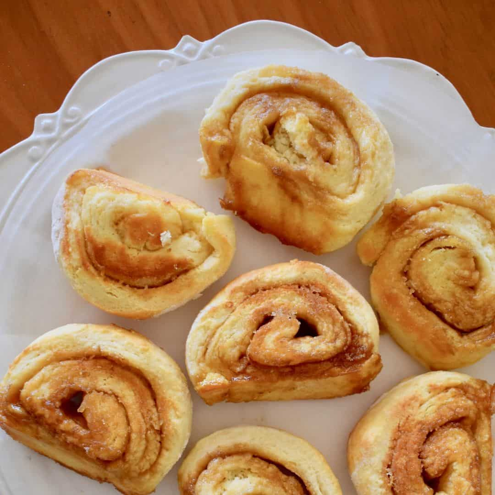

Butterscotch Scrolls

Description
A delicious recipe for Butterscotch scrolls. Biddie is an expert at making this recipe.
Ingredients:
- 2 cups SR flour
- 20g butter
- 3/4 cup milk
- 40g butter
- 3 tbs brown sugar
Steps:
- Collect all ingredients.
- Set oven at 200℃.
- Rub 20g butter into flour using fingertips.
- Make a well in the centre and add the milk.
- Mix with a spatula and mix into a soft dough.
- Turn out onto a lightly floured bench and knead until smooth.
- Cream 40g butter with brown sugar.
- Roll out into an oblong 30cm * 20cm and spread with creamed mix.
- Roll up and seal edges. Cut into 12 slices.
- Arrange on paper lined oven tray and glaze with milk.
- Bake at 200℃ for 15-20 mins or until golden brown.
- Carefully remove with a spatula and place on a cake cooler.